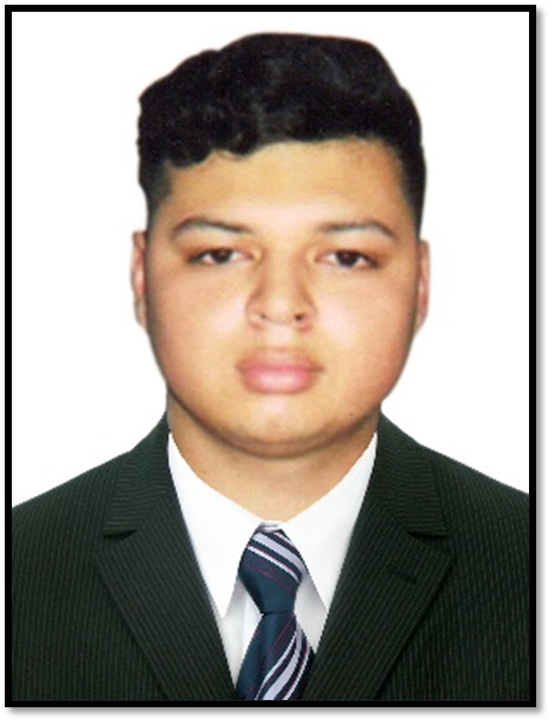

Helton André Najarro Quiñonez

Helton Najarro es un joven que se dedica al diseño gráfico y algunos trabajos en el área técnica de
informática, actualmente trabaja en Cyber PC y es estudiante de Ingeniería en Sistemas de Información
en la Universidad Mariano Gálvez de Guatemala. Nación En Guatemala, Guatemala el 31 de julio de 1999.
Hijo de Glenda Quiñonez Arana y Gilmer Rodimiro Najarro Lemus.